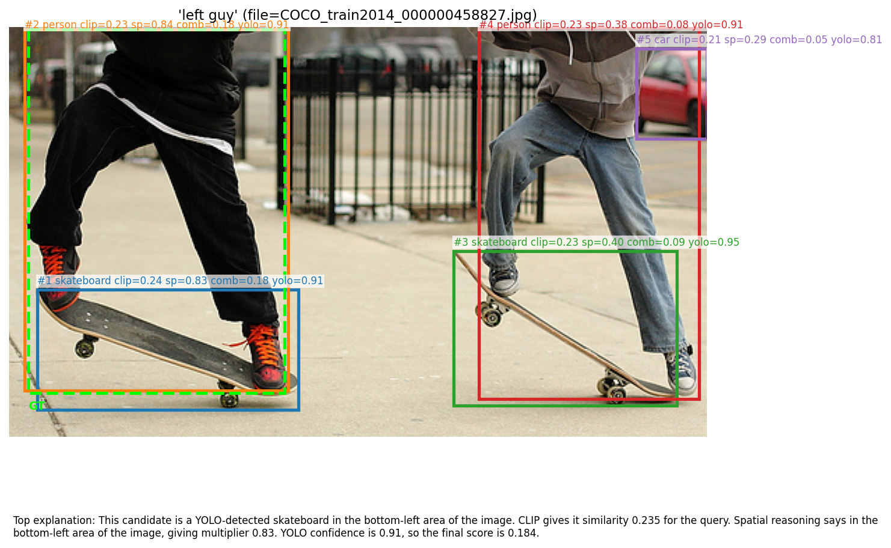
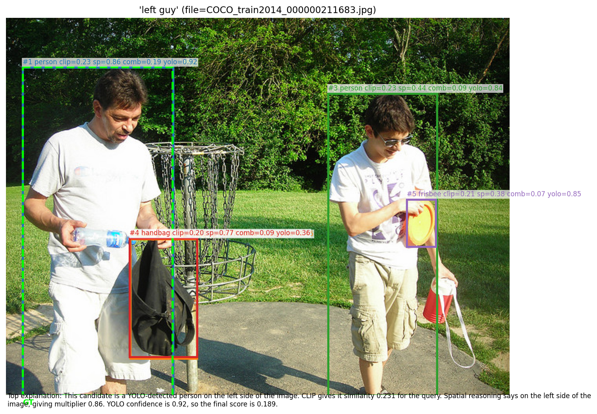
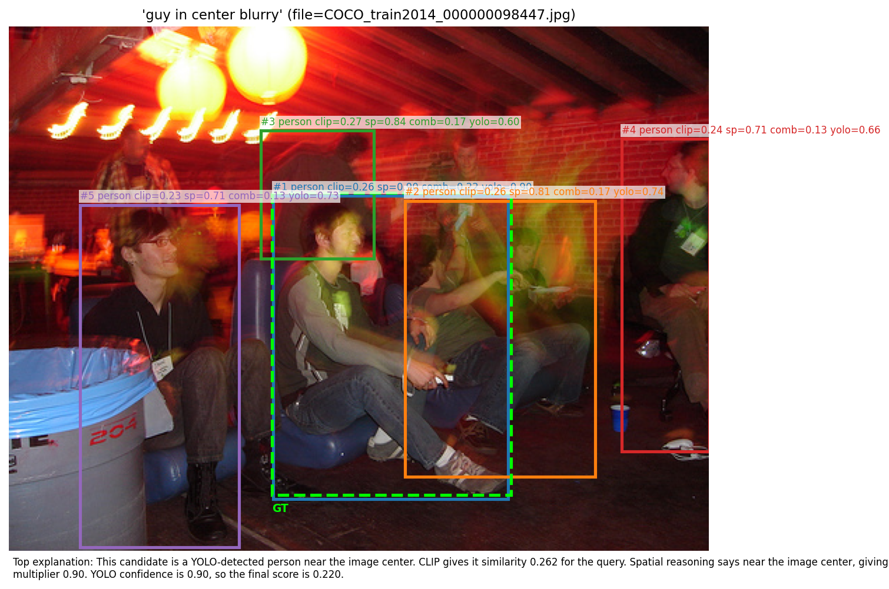
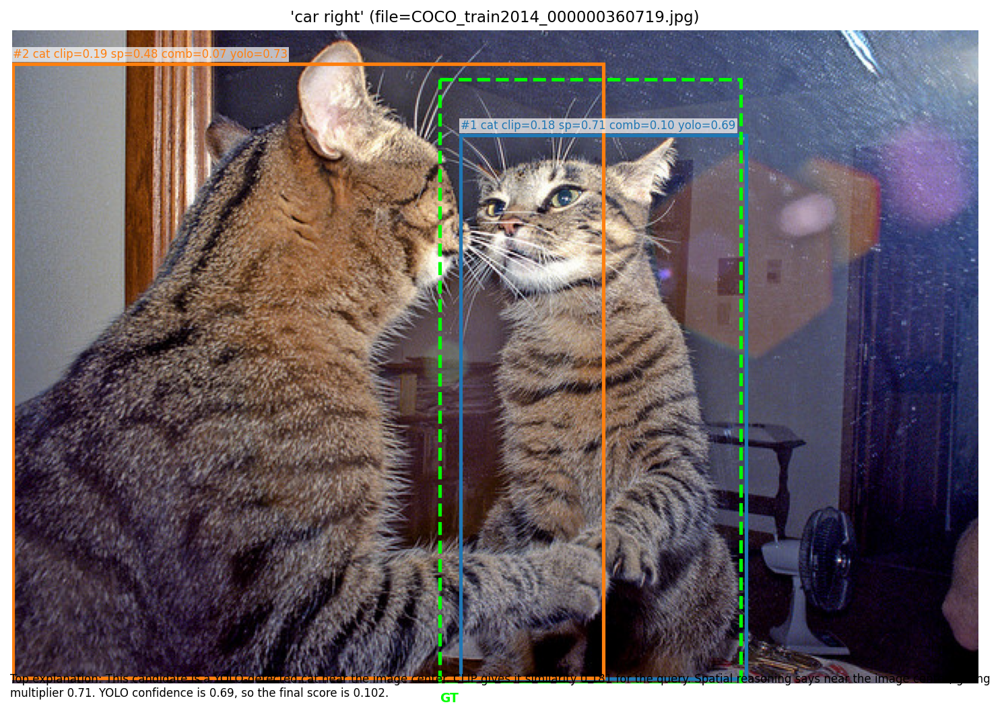

Abstract
In this project, we present a lightweight, training-free baseline for visual grounding, which is the task of locating an image region described by a natural-language query. Our approach combines a YOLOv8 object detector, an OpenCLIP vision-language model, and a light spatial reasoning module. YOLO first generates candidate bounding boxes, CLIP then scores how well each region matches the query, and a rule-based module adjusts these scores when the query includes spatial cues such as left of or above. To improve interpretability, each prediction is accompanied by a short explanation describing how the score was computed. We evaluate several variants of our pipeline on the RefCOCO-M validation split (1,190 images and 5,598 queries). The full system achieves accuracy of 62.8% Acc@0.5 and 60.9% Acc@0.7.
Introduction
Visual grounding is a task that asks a model to locate an object in an image given a natural-language description, for example, “the man on the left” or “the car next to the bus.” Unlike standard object detection, this task requires understanding spatial relationships, attributes, and context.
Although recent end-to-end approaches achieve strong performance, they usually require large datasets and expensive training. In contrast, models like CLIP can match images and text without additional training, which makes them appealing for building simpler systems.
In this work, we design a simple, training-free pipeline with three components: YOLOv8 [3] for generating candidate regions, OpenCLIP for scoring how well each region matches the query, and a rule-based spatial module that adjusts scores based on positional language. We also include a lightweight explanation module at the end that provides a description of each prediction to users.
Our main contributions are the following: (1) A simple, fully training-free visual grounding pipeline combining YOLO, CLIP, and spatial reasoning; (2) A lightweight explanation module that improves interpretability; (3) An ablation study showing the impact of spatial reasoning and confidence reweighting.
Related Work
The task of understanding natural-language descriptions in images combines ideas from both computer vision and natural language processing. Prior work related to the task can be grouped into the following three main topics: visual grounding, vision–language representation learning, and spatial reasoning.
Visual grounding.
Early methods used hand-crafted features and language parsers [5]. Deep learning approaches such as MAttNet [10] jointly train visual and language encoders. Transformer-based models including TransVG [1] and MDETR [4] reach near-human performance on standard benchmarks.
Vision-language models.
CLIP [8] learns aligned image and text embeddings via contrastive pre-training on 400 million image-text pairs. OpenCLIP [2] replicates and extends CLIP with open-source weights. Zero-shot transfer of CLIP to grounding via cropped-image scoring is explored in GLIP [6] and OWL-ViT [7].
Spatial reasoning.
Several works improve grounding by explicitly modeling spatial relations. Our work uses a lightweight rule-based parser that does not require training and produces directly interpretable outputs.
Other reference
We evaluate the model on the RefCOCO-M validation split [9], which contains 1,190 images and 5,598 queries. We report Acc@0.5, Acc@0.7, mean IoU, and median IoU.
Approach
Our method includes four main stages. We pass along intermediate results at each stage and the entire system operates without learned parameters.
Stage 1: Region proposals (YOLOv8).
Given an input image and a query , we use YOLOv8 to generate a set of candidate bounding boxes. Each box has a predicted COCO class label and a confidence score . We retain up to 100 candidate regions per image in order to balance coverage and model efficiency.
Stage 2: CLIP scoring.
Each candidate region is cropped and compared with the text query using OpenCLIP (ViT-B/32). We compute -normalized embeddings for all image crops and the query in a single batched forward pass, and measure similarity via cosine similarity:
Stage 3: Spatial reasoning.
If the query contains spatial language, we apply a multiplier to each candidate using two complementary strategies.
Absolute position bias. For terms such as “left,” “right,” “top,” “bottom,” or “center,” we assign higher scores to boxes whose centers align with the described region of the image.
Pairwise relational reasoning. For phrases including “left of the car” or “above the bus,” we extract the spatial relation with the reference object. Using YOLO labels with a synonym dictionary, we identify matching reference boxes. We select the best reference box and compute a smooth bias based on how well the spatial relation is satisfied for each candidate .
If both types of spatial cues are present, their effects are averaged. If spatial information is not detected, we set .
Stage 4: Explanation generation.
We generate a natural-language explanation that follows the scoring process for each box, which allows users to verify model behavior and diagnose failure cases. The explanation includes identification of the detected object, description of its location, reporting the CLIP similarity, summarizing spatial reasoning applied, the detection confidence and the final score. This does not require additional inference since all values are already computed.
Pipeline integration.
The full system is implemented as a sequential pipeline. Given an input , YOLOv8 first generates candidate boxes with class labels and confidence scores . Each candidate box is cropped from the image and scored against the query using OpenCLIP, producing semantic similarity scores . The query is also parsed for absolute or relational spatial cues, which are converted into spatial multipliers . We then combine these quantities into the final score
The candidate boxes are ranked by this score, and the highest-ranked boxes are returned as the final predictions. For each returned box, we also generate an explanation text using the already-computed class label, location, CLIP score, spatial multiplier, YOLO confidence, and final score.
Results
   


Dataset and metrics.
We evaluate the model on the RefCOCO-M validation split, which contains 1,190 images and 5,598 queries. We report Acc@0.5, Acc@0.7, mean IoU, and median IoU.
Qualitative results.
Figure 1 shows four examples from our system. The later three cases gives correct result. The top-ranked prediction aligns well with the ground truth. The first example gives partially correct result that the prediction with the second highest score is the correct prediction, but the prediction with the highest score is close enough that it includes part of the correct answer. This shows that failures may occur when queries are ambiguous or when the correct object is not detected by YOLO.
Ablation study.
Table 1 compares four variants of our system. Compared with CLIP only, adding YOLO confidence leads to a modest improvement ( 5% increase for each score), and adding spatial reasoning provides a relatively larger improvement ( 15% increase). Combining all components results in the best overall performance.
Table 1. Ablation on RefCOCO-M validation (1,190 images, 5,598 queries). Acc values reported as percentages; mIoU and Med. IoU reported in [0,1].
| Variant | Acc@0.5 | Acc@0.7 | mIoU | Med. IoU |
|---|---|---|---|---|
| CLIP only | 40.6 | 38.3 | 0.413 | 0.166 |
| CLIP + YOLO | 45.5 | 44.0 | 0.455 | 0.228 |
| CLIP + Spatial | 56.6 | 53.8 | 0.559 | 0.841 |
| Full system | 62.8 | 60.9 | 0.614 | 0.908 |
Observations.
The full system achieves the best performance across all metrics. Spatial reasoning contributes the most, particularly for median IoU, suggesting that spatial cues help resolve ambiguity and improve localization precision. Adding YOLO confidence further improves accuracy although the gain is smaller compared to adding spatial reasoning.
Discussion and Conclusions
The key contributions of our project are its lightweight design and modular pipeline architecture. In general, our results indicate that a simple, training-free model can perform reasonably well on visual grounding. Among all components, spatial reasoning contributes the most to performance, while YOLO confidence provides an additional improvement.
The explanation module helps with debugging for users by providing the contribution of each scoring component, making it easier to identify whether failures stem from detection, semantic mismatch, or spatial reasoning.
There are some limitations. The system depends on YOLO’s fixed object categories, which limits its ability to handle unseen classes. CLIP may also favor visually distinctive regions over the correct object, and the rule-based spatial module can fail when reference objects are not detected.
For future work, we could explore more flexible spatial reasoning methods, such as using language models to parse complex queries and adopting class-agnostic proposal methods for better generalization.
Statement of Individual Contribution
Weizhi Du
Chose RefCOCO-M as the primary evaluation dataset. Developed the baseline pipeline in
vl_baseline/pipeline.py, integrating YOLOv8 Nano for object detection with OpenCLIP.Implemented functionality in
vl_baseline/clip_scoring.pyto score and rank candidate bounding boxes using cosine similarity between cropped image regions and the input text query.Worked on explanation generation and integrating the system pipeline.
Ingrid Jin
Created
preprocess.pyto set up local cache directories and configure HuggingFace environment variables.Added the
result_to_serializableutility invl_baseline/pipeline.pyto enable saving pipeline outputs in a serializable format.Led the work on report writing.
Ryan Zhang
Developed
run_baseline_demo.pyto load validation samples from RefCOCO-M, execute the pipeline, and store the top five predictions.Extended
rank_candidatesinvl_baseline/clip_scoring.pyby introducingapply_spatialandclip_only_rankoptions to support ablation studies.Implemented evaluation and demonstration scripts.
External Resources Used
Dataset.
RefCOCO-M hosted on Hugging Face: https://huggingface.co/datasets/moondream/refcoco-m
Checkpoints.
YOLOv8n weights from Ultralytics: https://github.com/ultralytics/ultralytics
OpenCLIP ViT-B/32 (openai pretrained): https://github.com/mlfoundations/open_clip
Libraries.
PyTorch, TorchVision, NumPy, Pillow, Matplotlib, Hugging Face datasets, and Hugging Face Hub.
References
[1] Jiajun Deng, Zhengyuan Yang, et al. Transvg: End-to-end visual grounding with transformers. In ICCV, 2021.
[2] Gabriel Ilharco et al. OpenCLIP, 2021.
[3] Glenn Jocher, Ayush Chaurasia, and Jing Qiu. Ultralytics yolov8, 2023.
[4] Aishwarya Kamath et al. Mdetr – modulated detection for end-to-end multi-modal understanding. In ICCV, 2021.
[5] Sahar Kazemzadeh, Vicente Ordonez, Mark Matten, and Tamara Berg. Referitgame: Referring to objects in photographs of natural scenes. In EMNLP, 2014.
[6] Liunian Harold Li et al. Grounded language-image pretraining. In CVPR, 2022.
[7] Matthias Minderer et al. Simple open-vocabulary object detection with vision transformers. In ECCV, 2022.
[8] Alec Radford, Jong Wook Kim, Chris Hallacy, et al. Learning transferable visual models from natural language supervision. In ICML, 2021.
[9] Moondream Team. Refcoco-m: Refined refcoco with improved annotations, 2024. MIT License.
[10] Licheng Yu et al. Mattnet: Modular attention network for referring expression comprehension. In CVPR, 2018.
← Projects